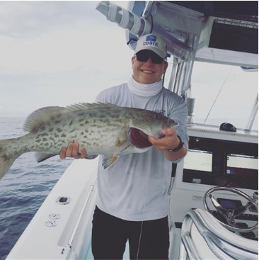
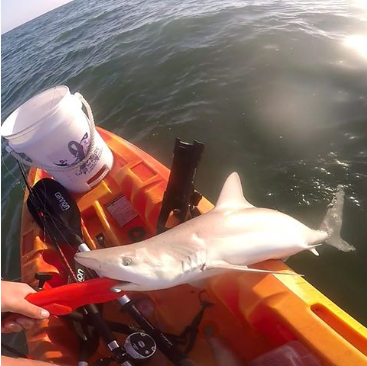

Welcome to my homepage! I am a Business Marketing Major in my Sophomore year at UMaine and I minor in Naval Science. I am an aspiring Marine Corps Officer, and when I commission I hope to go to flight school in my home state of Florida. On this site you will find links to my social media, Unit Facebook page, and the Marine Corps' Aviation Page
 I am an avid fisherman, and here are some of my catches from years past! You can check out more fishing pictures and other content on my Instagram by following the link below!